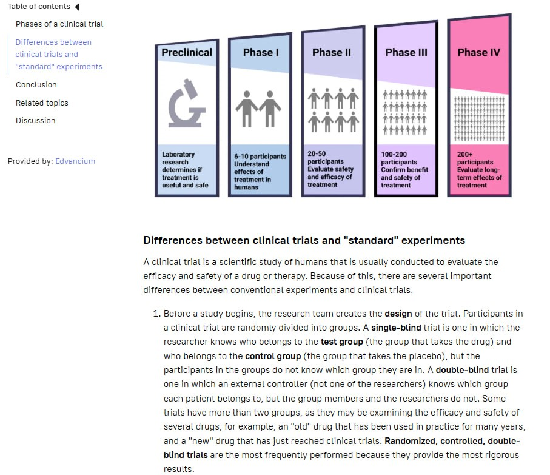
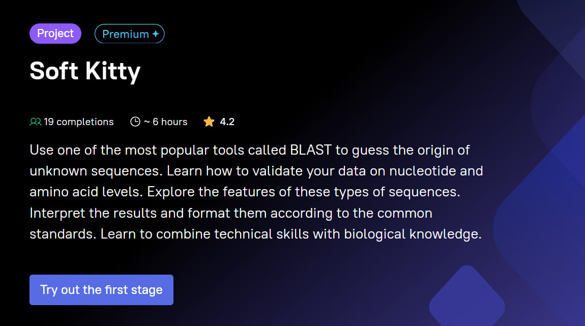

People love stories, and people make history. Science and medicine are also about stories, and I love writing them.
I have written articles and multimedia for Technology Networks, The Skeptic, Research-HIVE, ABSW, N+1, Knife.Media and others.
Hyperskill is a platform with bioinformatics courses for IT students. I participated in development of 3 courses, ensuring scientifically accurate data presentation, achieving an average student rating of 4.3
I Designed and implemented over 110+ infographics and scientific visualizations, enhancing educational engagement and comprehension.


Multimedia projects are an excellent way to communicate science. The clever combination of text, visuals, interactivity, and audio creates a fully immersive experience. One of my projects "What is cats?" was shortlisted for the 2025 New Media Writing Prize in the Journalism category.
What can reveal a person's story better than an interview?
Live communication helps to immerse yourself much better in a person's life and in the topic under discussion. For example, recently with Woman in Science PDX we discussed the limitations of women in the scientific community, and also the beauty of science.
I also presented lectures and workshops on science communication and popular science topics.
Events, scientific festivals, and museum exhibitions are a great way to introduce the latest scientific advances to a wider audience. One of my favorite events is a science competition for high school students — I managed its organization from 2012 to 2015.